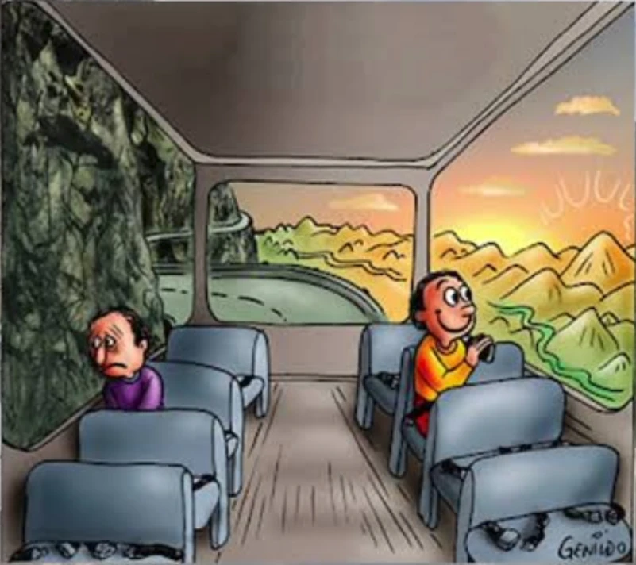
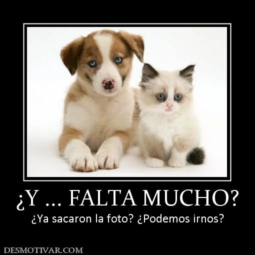

La perspectiva decide entre faltar y quedar — no el reloj · faltar no es hacer falta · me hacés falta, el agujero que hay que llenar · el dativo y a quién le importa · la cuenta regresiva y sus vecinos tardar y durar.
Cómo leer las etiquetas
En claseShe taught this. Teacher-attested.
MaterialShe sent it, but we never worked through it.
AmpliaciónAdded after class from reference material — not hers.
Velocidad 🔊
①
La perspectiva decide, no el reloj
Same clock, same room — the verb changes with where your attention sits
En clase
Las dos láminas que mandó la profe son sobre faltar y hacer falta. La clase no fue sobre eso. La clase fue sobre faltar y quedar, y sobre una idea que ella repitió de varias maneras: el hecho externo no elige el verbo. El mismo día de vacaciones, el mismo examen, los mismos cinco minutos — y los dos verbos siguen disponibles. Lo que decide es desde dónde mira el que habla.
el reloj no cambia · cambia hacia dónde mira el hablante

1
2
Me queda un solo día de vacaciones… y después, a trabajar.quedar
¡Falta un solo día para volver a ver a mi perro!faltar
1Me queda un solo día de vacaciones… y después, a trabajar. — quedar
2¡Falta un solo día para volver a ver a mi perro! — faltar
El dibujo que trajo la profe, con lo que ella escribió encima puesto acá en texto. El chiste está en las ventanillas: el mismo colectivo, el mismo viaje, el mismo día — y de un lado se ve una pared de roca y del otro un atardecer. Dibujo firmado por Genildo.
Las cuatro lecturas
La lectura fácil del dibujo sería «el triste dice quedar y el contento dice faltar». No es eso, y la propia profe lo desarmó: escribió también falta un solo día para terminar las vacaciones para alguien a quien no le gusta el viaje. Es faltar en boca del pasajero infeliz. Las cuatro casillas existen.
quedar — el tiempo que todavía tengo
faltar — lo que me separa del final
Le gusta el viaje
Me queda un solo día. Lo que tengo se me está terminando.
Falta un día para volver a ver a mi perro. Lo bueno está del otro lado.
No le gusta el viaje
Me quedan doce horas antes de tener que levantarme. Todavía tengo colchón.
Falta un solo día para que terminen estas vacaciones. El final es el alivio.
Las dos casillas de arriba son suyas, escritas sobre el dibujo. Las dos de abajo están reconstruidas a partir de lo que dijo en clase — la de doce horas salió del ejemplo de levantarse temprano, la de las vacaciones es su cuarta anotación reformulada con para que.
El examen — el mismo reloj, dos verbos
El ejemplo más limpio de la clase no está en el dibujo. Son cinco minutos de examen: la misma sala, el mismo reloj, la misma cantidad de tiempo. Lo único que cambia es cómo le está yendo al que habla.
Me quedan cinco minutos.
I've got five minutes left. — Voy bien, estoy repasando. Cinco minutos de trabajo que todavía tengo.
Me faltan cinco minutos.
Five minutes to go. — Esto es duro. Cinco minutos que se interponen entre yo y el final.
Faltan dos días para el examen.
The exam is two days away. — El foco está en el examen.
Quedan dos días.
There are two days left. — El mismo calendario; el foco está en los dos días.
Y algo que ella aclaró y conviene no perder: muchas veces no hay ninguna diferencia. Uno agarra el verbo que le vino a la cabeza y no hay historia emocional atrás. La perspectiva no es una regla que obligue — es lo que decide cuando sí hay algo que decidir. El dicho inglés del vaso medio lleno o medio vacío (que trajo Daniel a la clase, no ella) es exactamente esto: dos descripciones verdaderas del mismo vaso.
NOTA — why both verbs are always available here. An interval between now and an endpoint is an unusual kind of quantity: it is simultaneously time you still hold and distance to a target. Both descriptions are true at once, which is why quedar and faltar are near-interchangeable in countdowns and why your feeling gets to pick. That is not true of the verbs in general — falta sal and queda sal are opposite claims about the same kitchen. The closing note at the bottom of this page works that out; card ② is where the non-interchangeable half starts.
②
Faltar no es hacer falta
One reports a subtraction; the other reports a requirement
Material
Esta es la tarjeta que esta página no intenta agotar. Es el tema de las dos láminas y de los tres hilos de foro que están abajo en Materiales, y da para una página entera. Acá va lo mínimo para no confundirlos.
faltar · falta algo que debería estar · hacer falta · se necesita algo
Faltar informa una resta: algo no está, algo se descontó de lo que había. Hacer falta informa una necesidad: algo se requiere. Son dos ejes distintos, no dos niveles del mismo. La prueba rápida es la sustitución:
se cambia porno tengo · no está · no hayentonces es faltar.
se cambia pornecesito · es necesarioentonces es hacer falta.
Me faltan cinco euros.
I'm five euros short. — No tengo cinco euros. Una resta.
Hace falta estudiar más.
More studying is needed. — Es necesario estudiar más. Una necesidad.
Falta una página para terminar.
One page to go. — Queda una página. Acá faltar y quedar sí se tocan: es la tarjeta ①.
La concordancia, una sola vez
En hacer falta, falta es el sustantivo, no el verbo. El único que se conjuga es hacer, y concuerda con lo que se necesita:
Me hace falta una silla.
I need a chair. — singular.
Me hacen falta dos sillas.
I need two chairs. — plural. Nunca hacen faltas: falta no se mueve.
Faltar a — donde la gramática se da vuelta
Con la preposición a, faltar deja de funcionar como gustar y la persona pasa a ser el sujeto. Es el mismo verbo con otro andamiaje, y no admite hacer falta en su lugar.
Juan falta a clase.
Juan is absent from class. — Juan es el sujeto.
Le faltó el respeto a su jefe.
He was disrespectful to his boss. — la preposición es obligatoria.
Faltó a su palabra.
He broke his word.
NOTA — where the two genuinely overlap. With a concrete quantity aimed at a purpose — money, chairs, ingredients — both are normal and the choice is stylistic. The infographic's own contrast, me faltan dos euros against me hacen falta dos euros para comprarlo, does not actually separate them: if you are two euros short of buying the thing, both sentences are true at the same time. The clean split is elsewhere — hace falta estudiar (requirement, no subtraction) against falta María (absence, nothing required).
Acá no hay una segunda acepción. Hacer falta significa una sola cosa — ser necesario — y cuando lo necesario es una persona, el inglés traduce I miss you porque no tiene otra forma de decirlo. La imagen que usó la profe: un agujero, un vacío que hay que llenar. Por eso con personas pesa tanto, igual que me gustás.
me hacés falta = te extraño + te necesito
Me hacés falta.
RioplatenseI miss you — y te necesito. Forma neutra: me haces falta.
Te extraño.
I miss you. — Nombra el sentimiento y nada más. Es la forma por defecto, la que se dice todo el tiempo.
La dirección — el error fácil
El pronombre marca quién tiene el agujero, no quién se fue. Dado vuelta, la frase dice lo contrario de lo que uno quería decir.
el agujero es míome hacés faltaI miss you.
el agujero es tuyote hago faltaYou miss me. Gramaticalmente impecable — y según la profe, raro de escuchar.
Extrañar y necesitar no son lo mismo
Los tres escenarios que planteó ella, en su orden. El tercero es el que muestra que hacer falta no es un sinónimo elegante de extrañar: se puede necesitar a alguien sin extrañarlo en absoluto.
Te extraño, pero no te necesito, porque me hacés daño.
RioplatenseUna relación tóxica: el sentimiento sigue, la necesidad no.
Lo extraño y la mayoría de los días lo necesito para ayudarme.
Una relación sana: las dos cosas juntas.
Mi jefe se fue de vacaciones y me hace falta para tomar una decisión. No lo extraño, pero lo necesito.
Necesidad sin sentimiento. Acá extrañar no serviría.
El registro, según ella
Advirtió que hacer falta con cosas se escucha sobre todo en chicos y en hablantes de menos escolaridad, o como énfasis medio en broma, buscando lástima — me hace falta un lápiz, me hace falta una mascota. No es que esté mal; es que no es neutro. Dónde exactamente está el límite quedó como pregunta para ella.
NOTA — echar de menos is not the Buenos Aires word.Echar de menos is the peninsular expression for missing someone, and it appears in every textbook. In Buenos Aires the verb is extrañar, full stop — you will hear te extraño and essentially never te echo de menos. Worth recognising in writing and in Spanish films; not worth producing on this trip.
④
Falta leche / me falta leche
What the dative does: whose shortfall it is
En clase
Esta salió de una pregunta de Daniel: si hace falta era un impersonal como llueve. No lo es — pero la respuesta terminó siendo más útil que la pregunta. Los impersonales de verdad son los del clima: llueve, hace frío, hace calor. No tienen sujeto posible y se asume que afectan a todos por igual. Faltar sí puede sonar así… hasta que aparece un dativo, y entonces el asunto tiene dueño.
Falta leche en la heladera.
There's no milk in the fridge. — Sin dativo. Acá todos tomamos leche: nos afecta a todos, como la lluvia. Faltar = no hay.
Me falta leche en la heladera.
I'm out of milk. — Con dativo. La leche la tomo yo: es mi faltante y mi problema.
Me faltan cinco minutos para terminar.
I need five more minutes. — El que opera soy yo.
Faltan cinco minutos para terminar la cirugía.
The surgery ends in five minutes. — El dato es de todos los que están en el quirófano.
Hacer falta siempre tiene sujeto
Y por eso no es un impersonal: siempre hay algo que es lo necesario — una cosa, un infinitivo o una oración entera. Lo que puede faltar es el dativo, no el sujeto.
Hace falta esperar un poco más.
We need to wait a bit longer. — Todavía hay que esperar. El sujeto es el infinitivo.
Hace falta un mapa para llegar ahí.
You need a map to get there. — Se necesita un mapa.
Faltás vos.
RioplatenseYou're the one missing. — Forma neutra: faltas tú. Prueba de que el verbo no está congelado en tercera persona.
NOTA — the dative is not decoration. Spanish has a whole family of verbs that put the affected person in the dative and the thing in the subject slot: gustar, quedar, sobrar, faltar, hacer falta. Adding or dropping me does not make the sentence more or less polite — it changes who owns the situation. Falta leche is a fact about the fridge; me falta leche is a fact about me.
⑤
¿Cuánto falta? — la cuenta regresiva
faltar + para, and the two neighbours it gets confused with
Material
Esto viene de ¿Cuánto tiempo falta?, la unidad B1 de VideoEle que mandó la profe — el video y sus actividades están enlazados abajo en Materiales. Es la construcción de la cuenta regresiva, y tiene dos formas según lo que venga después de para.
faltar + [cantidad] + para + [infinitivo] · faltar + [cantidad] + para que + [subjuntivo]
Falta media hora para llegar.
Half an hour to go. — Infinitivo: el que llega es el mismo que habla.
Falta media hora para que llegue el tren.
The train is half an hour away. — Cambia el sujeto, entonces para que + subjuntivo.
Faltan treinta minutos para que llegue el tren.
Thirty minutes until the train arrives. — El verbo concuerda con la cantidad, no con el tren.
Faltan veinte kilómetros para que lleguemos.
Twenty kilometres to go. — También sirve para distancia, no solo para tiempo.

¿Y… falta mucho? — la lectura impaciente de faltar: el intervalo como puro estorbo. Nadie que la esté pasando bien pregunta esto. Sale de una de las páginas que mandó la profe, Helping You Learn Spanish.
Tardar, durar, faltar
La hoja los presenta juntos porque en inglés los tres caen en take o en last. En español miden cosas distintas.
Verbo
Qué mide
Ejemplo
tardar
El tiempo que lleva hacer algo.
El tren tarda una hora.
durar
El tiempo que algo existe o se extiende.
El viaje dura una hora.
faltar
El tiempo que queda hasta que algo termine o empiece.
Falta una hora para llegar.
Los tres pueden aparecer en la misma escena sin repetirse: el viaje dura una hora, el tren tarda una hora en hacerlo, y falta media hora para llegar.
Quedar y faltar + por + infinitivo
No está en ninguna de las láminas y conviene tenerlo: con por + infinitivo, los dos verbos hablan de lo que todavía está sin hacer.
Ampliación Esto no es de la profe ni sale de ninguna gramática de referencia: es un análisis escrito por Claude en la sesión en que se armó esta página, a partir de los ejemplos de la clase. Se guarda acá para no perder el razonamiento; el tratamiento completo va a la página de faltar y hacer falta cuando se construya.
Los dos verbos se anclan en puntos opuestos
Quedar se ancla hacia atrás, a un total previo que se fue gastando: presupone que había más y perfila el resto. Faltar se ancla hacia adelante, a una meta, una norma o un punto de llegada: presupone un total requerido y perfila lo que falta para alcanzarlo. Esto no tiene nada que ver con emociones y se ve con sillas:
Quedan dos sillas — todavía hay dos. Faltan dos sillas — estamos dos sillas por debajo de lo que necesitamos. Sobran dos sillas — hay dos de más. Tres posiciones sobre una misma cuenta: lo que hay, lo que falta contra un objetivo, lo que excede.
Por eso no son intercambiables en general
Solo describen la misma situación cuando los dos anclajes son construibles a la vez — había diez y se necesitan diez. En cuanto eso se rompe, se separan del todo: falta sal y queda sal son afirmaciones opuestas sobre la misma cocina. A la camisa le falta un botón es una camisa a la que hay que coserle un botón; le queda un botón es una camisa mucho peor. Falta María significa que no vino; queda María, que es la única que sigue acá.
El tiempo es el caso raro
Un intervalo entre ahora y un final tiene los dos anclajes disponibles siempre: es a la vez tiempo que todavía tengo y distancia que me separa del final. Las dos descripciones son verdaderas del mismo intervalo — el vaso medio lleno y medio vacío. Por eso, en las cuentas regresivas y solo ahí, los verbos entran en variación casi libre, y por eso tiene razón la profe cuando dice que muchas veces no hay ninguna diferencia y uno agarra el que se le ocurrió.
Y ahí es donde entra lo que enseñó ella
Cuando los dos anclajes están disponibles, algo tiene que decidir — y lo que decide es la postura del hablante. Quedar es el marco de la posesión, así que implica cuidar o valorar el intervalo. Faltar es el marco del faltante, así que implica estar orientado al final. De ahí sale todo lo de la tarjeta ①: el que teme el lunes cuenta lo que todavía tiene, el que espera a su perro cuenta lo que se interpone, y el pasajero infeliz puede usar faltar sin contradecirse, porque para él el último día no es ningún activo.
El límite
Todo esto vale dentro de la zona de solapamiento — intervalos y cantidades. Fuera de ahí no hay elección que hacer: faltar a clase y faltarle el respeto a alguien son otro comportamiento del verbo, y «hueco» o «resto» no explican nada. Eso lo cubre la tarjeta ②.
Honestidad sobre el estatus
La mitad estructural — anclaje hacia atrás contra anclaje hacia adelante — es semántica léxica corriente y es segura. La mitad afectiva encaja con todos los ejemplos que dio la profe, pero no hay una gramática de referencia a mano que la enuncie así; puede ser una observación de enseñanza más que un hecho documentado. Queda marcado como tal, y preguntado en la lista de abajo.
Los tres hilos de foro que miramos durante la clase, capturados como estaban. Son opiniones de hablantes nativos en un foro, no una fuente de referencia — valen por lo que muestran del uso, no como autoridad.
Material propio — no es de esta clase. Quedar tiene cuatro o cinco usos más que no tienen nada que ver con el tiempo, y esta página no los trata. Quedan enlazados acá para tenerlos a un clic cuando la pregunta sea «¿y los otros usos?».
La zona de solapamiento.Me faltan cinco pesos y me hacen falta cinco pesos: ¿escuchás alguna diferencia real, o es elegir una u otra sin más? Preguntado al revés: ¿hay algún contexto donde una de las dos te suene mal?
Te hago falta. ¿Es realmente raro o simplemente poco frecuente? ¿Lo dirías alguna vez, y si no, cómo decís «me extrañás»?
El registro de hacer falta con cosas. Dijiste que puede sonar a chico o a búsqueda de lástima. ¿Eso depende de la edad y la escolaridad del que habla, o de la situación? Un adulto que dice me hace falta descansar, ¿entra en eso o no tiene nada de raro?
Lo que tiene cada verbo adentro. ¿Te suena que quedar sea «lo que todavía tengo» y faltar «lo que me separa del final» — o para vos empieza y termina en que es la perspectiva? Y lo otro: eso de la perspectiva, ¿te lo enseñaron así o lo fuiste armando vos dando clase?
Sobreentendido. ¿Cuál usás en la práctica: sobre(e)ntender, dar por sentado, darse por sobreentendido? ¿Alguna suena a escrito?
Motochorro. Quedó anotado autochorro en los apuntes de la clase y parece error de oído. ¿Motochorro es la palabra, y existe alguna para el que roba desde un auto?